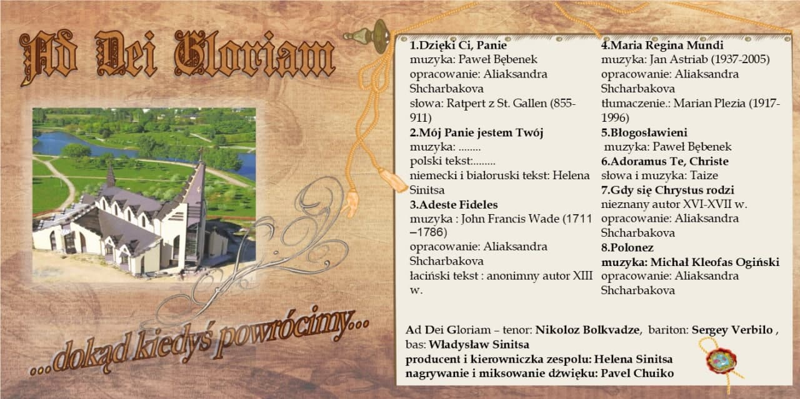

Wzory Śpiewów
W lutym 2020 r. z błogosławieństwem wspólnoty salezjańskiej nagraliśmy swoją
pierwszą płytę, która nosi tytuł
„... dokąd kiedyś powrócimy...”. Te słowa z Poloneza Ogińskiego dla nas
samych niespodziewanie stały się prorocze...

Płyta zawiera 8 utworów. 6 z nich to oryginalne muzyczne kompozycje. Śpiewy
zostały nagrane w języku polskim, białoruskim, niemieckim oraz po łacinie.
Mamy nadzieję, że to nagranie spodoba się Państwu)))
Adeste Fideles. Muzyka: John
Francis
Wade.
Opracowanie:
Aliaksandra Shcharbakova. Łaciński tekst: anonimny autor
Adoramus Te, Christe. Słowa i
muzyka:
Taize
Błogosławieni. Muzyka: Paweł
Bębenek.
Dzięki Ci, Panie Muzyka: Paweł
Bębenek.
Opracowanie:
Aliaksandra Shcharbakova. Słowa: Rałpert z St. Gallen
Gdy się Chrystus rodzi. Nieznany
autor.
Opracowanie:
Aliaksandra Shcharbakova.
Maria Regina Mundi. Muzyka: Jan
Astriab.
Opracowanie:
Aliaksandra Shcharbakova. Tłumaczenie: Marian Plezia
Mój Panie jestem Twój. Muzyka i
Słowa:
G. du Boullay.
Niemecki i białoruski tekst: Helena Sinitsa.
Polonez. Muzyka:
Michał Kleofas
Ogiński.
Opracowanie:
Aliaksandra Shcharbakova. Polski tekst: A. Kowalewski Białorusi tekst:
Helena Sinitsa.